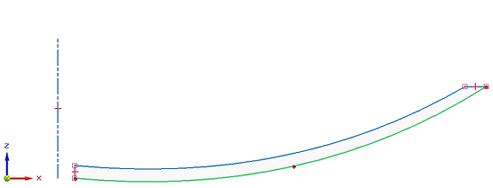
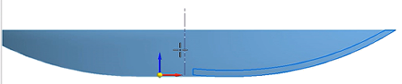
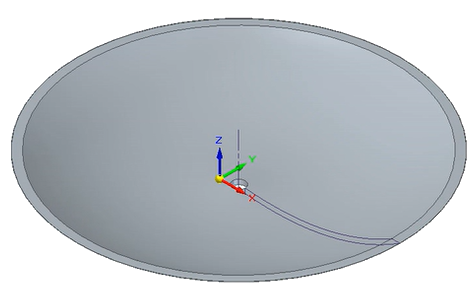
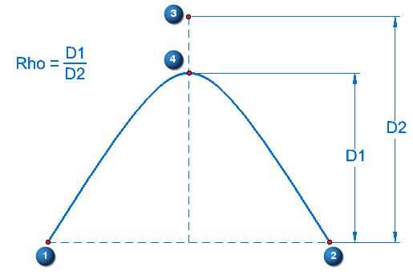

Conic command
Use the Sketching tab→Draw group→Curve list  →Conic command
→Conic command  to draw conic curves in the sketch environment. For more information, see Draw a conic curve.
to draw conic curves in the sketch environment. For more information, see Draw a conic curve.
Creating shapes from conic curves
Conic curves can be used to drive complex surfaces and create revolved, extruded, and swept features. You can use conic curves to design parts for many different manufacturing applications. Examples include satellites, power plant cooling towers, bridges, vehicle headlights, projectiles, hyperbolic lenses, and solar panels.



Defining a conic curve
A conic curve is defined by the following information:
-
Start point (1)
-
End point (2)
-
Control point (3)—The highest point of the curve. After placement, the control point edits the curve.
-
Vertex point (4)—Defines the radius of the curve at the vertex. The Rho value is based on this point.
-
Rho=(D1)∕(D2)—Defines the shape of the curve. The closer the value is to 1.00, the more elongated is the curve.

You can use the Variable Table to define a formula for the Rho value.
How do I
Draw a curveDisplay the control polygon for a curve
Insert or remove points on a curve
Simplify a curve
Convert analytic geometry to a b-spline curve
Draw a conic curve
Edit a conic curve
Look up more details
Curve commandCurve command bar
Curve Options dialog box
Conic command bar
Simplify Curve command
Simplify Curve dialog box
Convert To Curve command